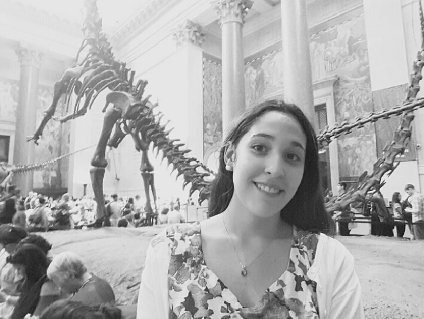

Profesional responsable y eficiente en busca de un puesto como web designer. Mi objetivo es obtener experiencia en el área de desarrollo web y poder ofrecer una experiencia de diseño personalizado y de gran calidad a mis clientes.
Datos Personales
Nombre: Sophia Borgobello
DNI: 38839035
Correo electrónico: sborgobello177@gmail.com
Edad: 27
Hijos: Si, 1.
Experiencia laboral
Poder Judicial de Entre Ríos - Escribiente titular: Me desempeño en la mesa de información permanente, realizando atención al público, carga de denuncias, recepción de amparos, carga en el registro nacional de reincidencia, entre otros trámites. Paraná, Entre Ríos agosto de 2018 - Actualidad.
Preparación académica
Estudíos universitarios:
Abogada- Facultad de Derecho - Universidad Católica Argentina Paraná, Entre Ríos. Estudios finalizados año 2019
Posgrados:
Cursos:
Habilidades
Idiomas:
Aspiraciones
Muy entusiasmada por poder empezar el camino del desarrollo web e insertarme en el mundo de la programación. Me gustaría integrar un equipo de trabajo con más programadores para poder conocer como realmente es el desarrollo de páginas webs grandes o apps webs.